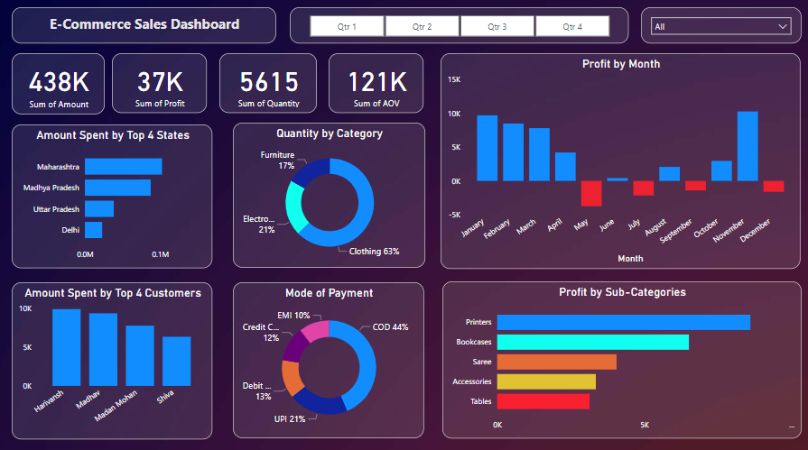

"Developed a music streaming database using SQL, focusing on streamlined song storage,
user engagement, and playlist administration. Implemented advanced SQL queries for
personalized song suggestions and genre-based popularity metrics."

"E-commerce sales dashboard crafted using Power BI.
This dynamic tool visualizes sales trends, customer behavior, and product performance with
clarity. Its interactive charts and KPIs provide actionable insights, driving informed
business decisions. Witness how data-driven excellence transforms the e-commerce landscape."

"Covid-19 in India Dashboard, a result of my expertise in Python and Tableau.
This comprehensive tool displays real-time pandemic data, insightful visualizations,
and regional trends, aiding informed decision-making. Experience the power of
data-driven solutions that contribute to understanding and managing public health challenges."